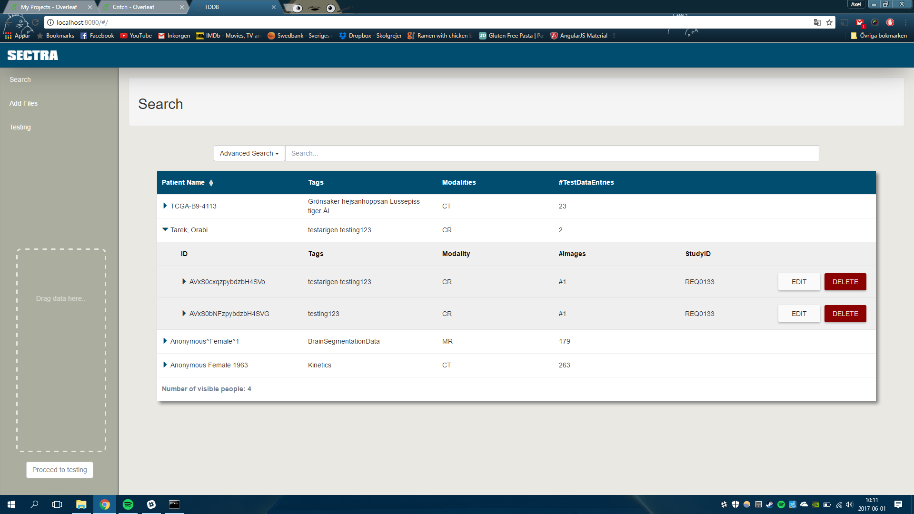

Hello! My name is Isabelle Rosenquist, born 1993 and currently living in Norrköping, Sweden. Right know I'm studying for a Master of science in Media Technology and Engineering at Linkoping University. From my education I have attended classes in the field of computer graphics, information visualization, web developement and image analysis. For a full list of attended courses, see my Linkedin profile. I am intresting in front end development, information visualization, UX and geovisualization. In addition to my studies, I have been involved in many student associations as well as working in a gym as an grouptrainingsinstructor. You can read my full resume here.
Projects
From my education in Master of Media Technology and Engineering I have attended several courses in the areas of 3D, information vizualisation, artificial intelligence, graphics design, user experience(UX), web development and image analysis. Below is a selection of some projects made in courses. This list is updated frequently.
TNM094 Bachelor Project in Media Technology

A bachelor project for Sectra. A web application for browsing and searching for files stored in database supplied to developers. See Github repo here.
TDDD27 Advanced Web Programming
Created a MEAN-stack with Mongo DB, Express.js, Angular and Node. A web application where you can create a user, sign in and upload a status. See Gitlab repo here and screencast here.
TNM069 Graphics Design and Communication
Created a graphical profile and artefacts for a fictional company named TIE. The was a social media platform for busines connections, such as Linkedin. See graphical profile here and artefacts (flyer, roll-up, webpage mockup) here.
TNM100 Structural Methods for User Experience (UX)
A course in UX were a Lo-Fi prototype for an app was created, see pictures and read the report here. Did a mockup of an existing webpage after usabiliy testing. See more pictures and read report here.
TNM061 3-D Computer Graphics
Modeling of 3D objects, figures and environment. The created images were rendered and used for a short film. Software used for modeling was Autodesk 3Ds Max. Link to video here.